11-15 08:49 · SKIN WEIGHT REPAIR / CANDIDATE
팔을 들 때 옆구리가 끌려 나오던 부분을 수정했습니다.
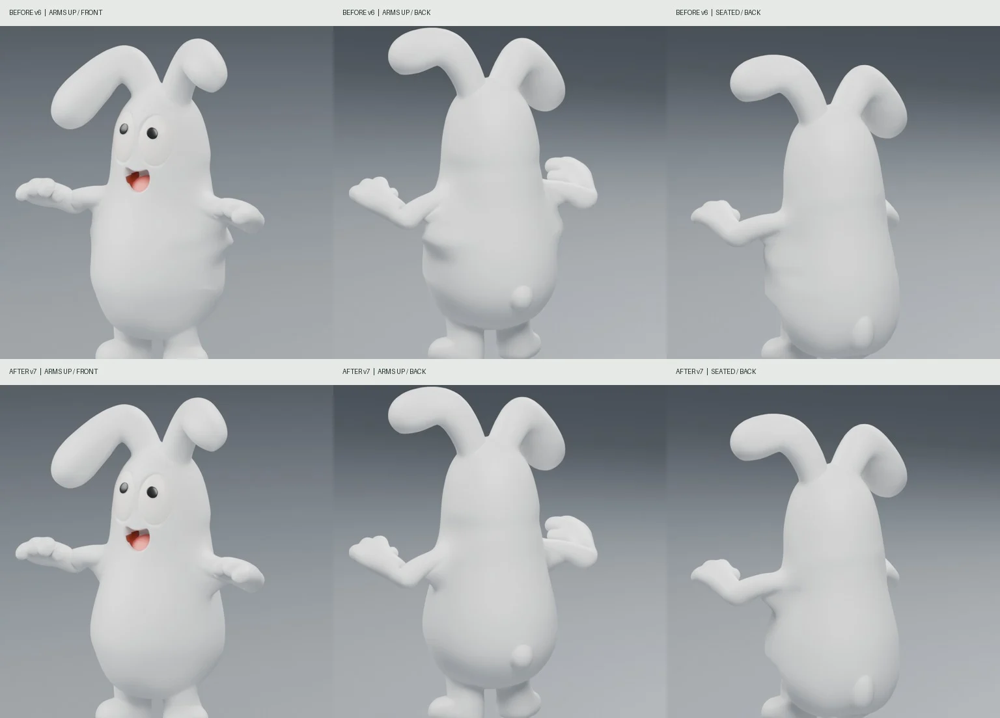
윗줄 수정 전 · 아랫줄 수정 후보같은 자세·조명에서 비교했습니다. 몸통을 보기 위해 검토용 가구만 숨긴 실제 Blender 렌더입니다.청록 체형의 몸통까지 번진 팔 가중치를 수정한 후보입니다. 메시의 실제 연결 구조로 몸통과 팔을 구분해 가중치 1,953개 정점을 조정했습니다.
원래 몸체·UV·83개 본의 길이와 동작은 유지했습니다. 손 가중치와 검토한 14개 자세의 손 모양은 이전 후보와 같습니다. 팔을 올렸을 때 등과 옆구리 돌출이 줄어든 것을 전후 렌더에서 확인했습니다.
겨드랑이 국소 접힘·깊은 바닥 춤·의자 접근·다른 체형은 남아 있습니다. 9초 착석 비교 후보이며 Unity 반영이나 최종 품질 승인이 아닙니다.
실제 렌더 135장, GLB·FBX 재가져오기와 541개 자세·중간 프레임의 검토 가구 안쪽 정점 검사를 확인했습니다. 전체 메시 자기교차·Unity 물리 검증과는 별개입니다.
11-15 08:27 · SEATED TRANSITION / CANDIDATE
손을 옮기고 빼는 구간을 더 여유 있게.
손 모양과 팔 길이, 책상에 짚는 자세를 유지한 착석 v6입니다. 손을 앞으로 옮기는 구간과 다시 빼는 구간을 각각0.45초 늘렸습니다.
가장 빠른 프레임 간 회전은 약8.1°에서6.9°로 줄었습니다. 원형·UV·가중치·본 길이는 그대로이며, 이전 동작과 대응하는24개 자세의 메시도 일치했습니다.
몸통·겨드랑이 주름, 의자까지 접근·오르기, 다른 체형과 Unity 반영은 남아 있습니다. 새9초 렌더 후보이며 최종 동작이나 사용자 승인 상태가 아닙니다.
반복 애니메이션 열기 →같은 시간으로 전후 비교
왼쪽은 이전8초 동작, 오른쪽은 이번9초 동작입니다. 왼쪽의 마지막 자세는 비교를 위해1초 유지했습니다.
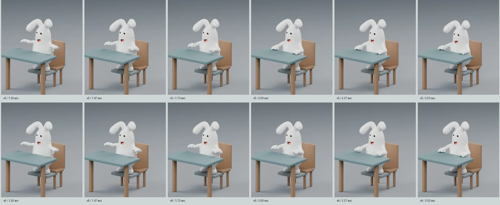
윗줄 이전 v5 · 아랫줄 v6같은 시간에서 비교한 손 이동. 자세를 바꾸지 않고 전환에 시간을 더 줬습니다.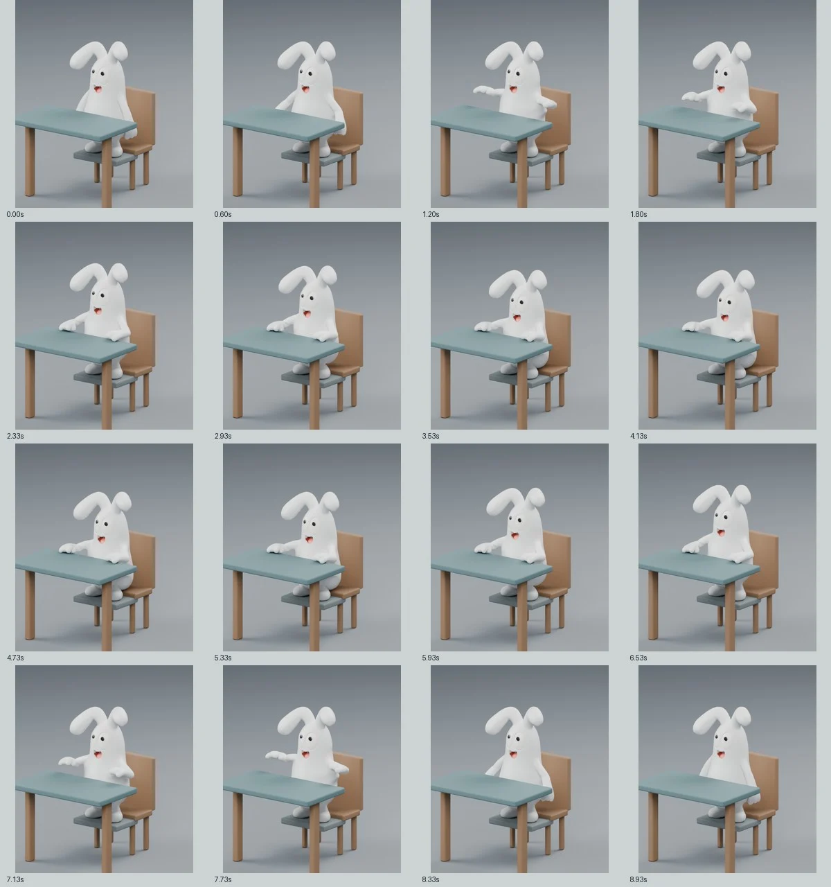
9초 동작의 16개 자세Blender 렌더 표본 검토 · 게임 화면 아님135장 실제 렌더,541개 정수·중간 프레임의 검토용 가구 안쪽 정점 검사, GLB·FBX 재가져오기 대조를 확인했습니다. 이 검사는 전체 메시 충돌이나 Unity Play 검증을 대신하지 않습니다.
11-15 08:15 · BLENDER CANDIDATE
팔꿈치 방향을 바꿔 손목 꺾임을 줄였습니다.
청록 체형의 착석 v5입니다. 손 모양·팔 길이·가중치·UV·탁자 접촉 위치를 유지하고 팔꿈치를 낮췄습니다. 손목 최대 각도는 약36°→21°, 손을 짚는 동안에는30°→13°로 줄었습니다.
실제 Blender 렌더120장으로 만든8초 미리보기입니다. 원형 메시 보존과 GLB/FBX 재가져오기를 별도로 확인했습니다.
전완 보조본의 최대 프레임 간 회전은6.9°→8.1°로 증가했습니다. 몸통·겨드랑이 주름, 바닥에서 의자까지 접근하는 동작, 다른 체형, Unity 적용과 사용자 승인은 아직입니다. 완성본으로 판정하지 않았습니다.
반복 애니메이션 보기 →
 윗줄 v4 · 아랫줄 v5같은 손 위치와 팔 길이에서 팔꿈치 방향만 비교
윗줄 v4 · 아랫줄 v5같은 손 위치와 팔 길이에서 팔꿈치 방향만 비교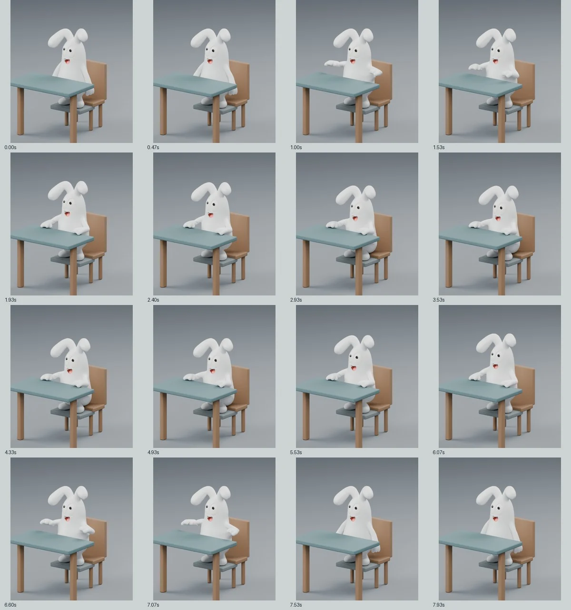
8초 착석 전환의 16개 표본연속 영상의 모든 프레임을 눈으로 검토했다는 뜻은 아닙니다.바닥 춤의 골반 국소 보정 v26은 접힘을 충분히 줄이지 못해 채택하지 않았습니다. 위 착석 수정과 별도입니다.
2026-11-15 · 작업 중 / 사용자 검토 전
치장 없는 기본 몸체 + 독립 스킨
네 체형과 얼굴은 유지했습니다. 가방·끈·머리띠·스카프·파우치를 분리해 선택 장비로 보존했습니다. 이 페이지는 모델 후보 보고서이며 현재 Unity 캐릭터를 교체한 결과가 아닙니다.
11/15 07:52 · 바닥 춤 접힘 진단 · 미완성
면을 더 쪼개기 전에, 접히는 구간부터
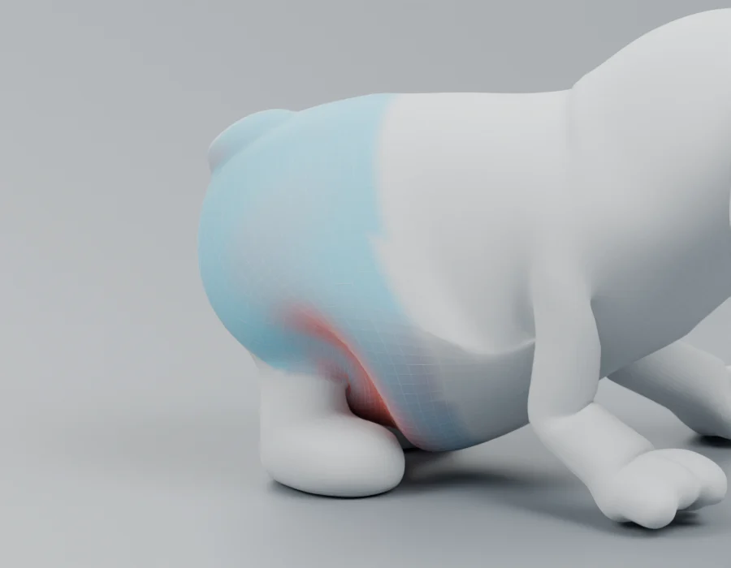
이미 촘촘한 사각 면으로 된 몸체입니다. 깊게 숙였을 때 배·골반·짧은 허벅지 경계에 접힘이 남습니다. 일부 변은 정지 상태 길이의 절반 이하로 압축됩니다.
해결된 결과가 아닙니다. 이 진단에서는 메시·본·가중치·애니메이션을 바꾸지 않았고, 새 춤이나 Unity 적용으로 표시하지 않습니다. 손과 발의 형태·본 길이를 보존하며 국소 관절 경계와 자세를 다시 조정해야 합니다.
서 있는 원형의 같은 영역 보기
11/15 07:35 · 손 놓기·착석 수정 후보 · Unity 미적용
팔꿈치와 손바닥이 받쳐지는 위치부터
손 모양·팔 길이·메시 가중치를 유지하고, 팔꿈치 방향과 손을 놓는 각도·탁자 간격을 맞췄습니다. 손을 올리고 내리는 시간도 늘렸습니다.
8초 착석 GIF · 16개 자세
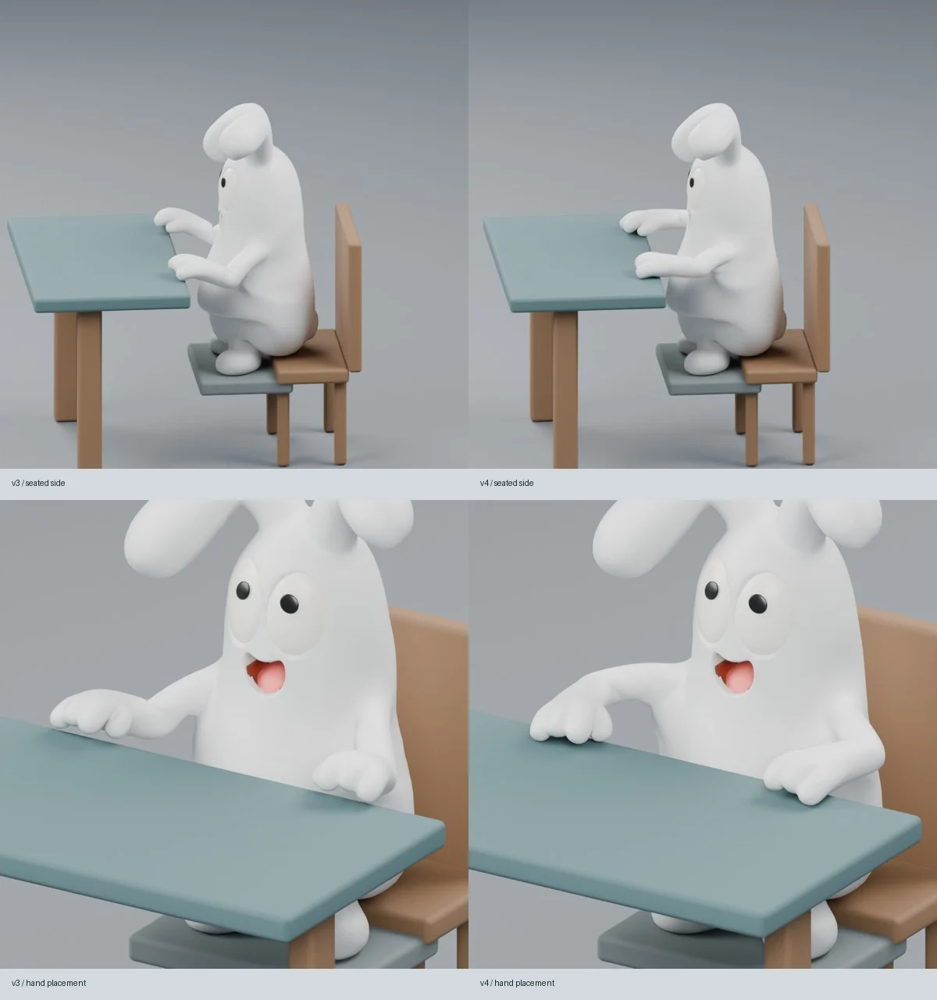
120장 Blender 렌더를 만들고 자세별로 검토했습니다. 정수·중간 프레임481개에서 검토용 가구의 안쪽으로 들어간 정점은 없었습니다. 최대 프레임 간 관절 회전은 약9.4도에서6.9도로 줄었습니다. 원형·UV·가중치·본 보존과 GLB/FBX 재가져오기 대조까지 확인했습니다.
완성 판정은 아닙니다. 서서 손을 짚는 구간의 손목 각도는 이전 후보보다 커졌으며, 몸통·겨드랑이 주름도 남습니다. 발받침 위에서 시작하는 동작으로, 바닥에서 의자까지 접근·오르기와 실제 게임 가구 피팅, 다른 체형·Unity 적용·사용자 승인은 아직입니다. 연속 재생의 자연스러움은 별도 검토가 필요합니다.
바닥 춤의 손 접촉도 따로 확인
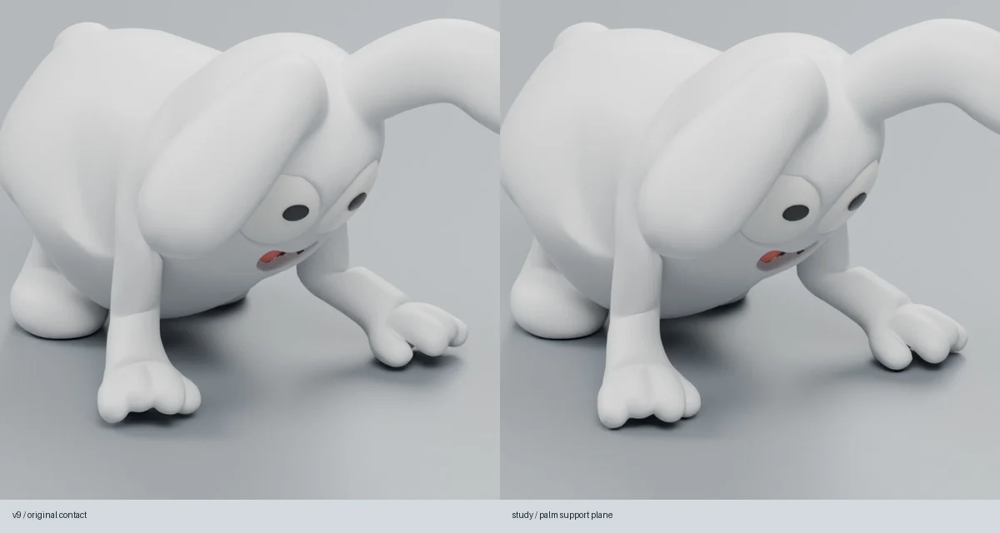
손바닥의 지지면에 맞춰 기울기를 조정한 한 자세 비교입니다. 이 자세의 손목 굽힘은 약52도에서45도 이하로 줄었지만 깊게 숙인 몸통의 접힘은 남았습니다. 새 전체 춤이나 게임 적용 결과가 아니며, 기존 춤을 교체하지 않았습니다.
11/15 07:12 · 발바닥 굴림 비교 후보 · Unity 미적용
뒤꿈치부터 발끝으로 딛는 작은 걸음
발바닥을 눌러 펴거나 손·팔을 늘리지 않고, 발 전체를 작게 굴리며 딛도록 만든 1.6초 비교안입니다. 발바닥 곡면에 맞춰 접지점이 밀리지 않도록 궤적을 계산했습니다.
이번 보행 GIF · 16개 자세
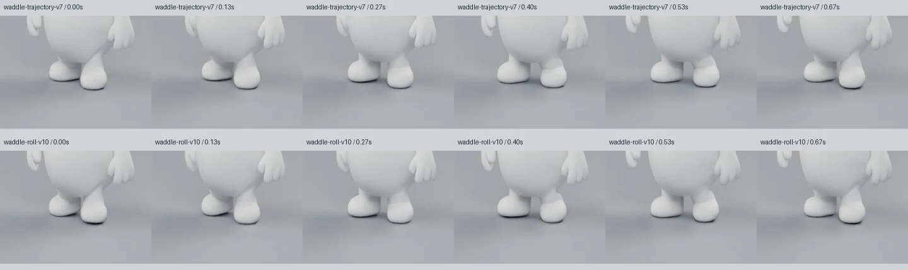
위는 기존 v7, 아래는 이번 v10입니다. 48장 실제 Blender 렌더에서 자세를 비교했고 원래 메시·UV·본 길이와 손·팔 가중치 보존, GLB/FBX 재가져오기 대조를 확인했습니다.
발을 들 때 발목 안쪽 주름은 남습니다. 종아리의 최대 프레임 간 회전은 기존 8.3도에서 9.6도로 늘어, 전체 품질이 좋아졌다고 판정하지 않았습니다. 무릎 가중치 변경안은 접힘이 더 심해져 제외했습니다. 두 보행안을 비교 후보로 보존하며 게임 이동 속도 맞춤·연속 재생 검토·다른 체형·Unity 적용·사용자 승인은 아직입니다.
11/15 06:35 · 보행 궤적 수정 후보 · Unity 미적용
발을 내딛는 구간을 더 부드럽게
발을 드는 높이와 되돌아오는 곡선, 무릎이 펴지는 여유를 조정했습니다. 같은30fps 기준 종아리의 가장 큰 프레임 간 회전이11.7도에서8.3도로 줄었습니다. 원래 메시·UV·손·팔 길이를 유지했습니다.
제자리 걸음 GIF · 16시점 자세 보기
바닥 기준으로 앞으로 이동하는 모습
3.2초 이동 미리보기입니다. 발이 붙는 구간에 맞춰 원형 크기에서 초당 약13cm 전진합니다. 제자리 클립에 미리보기용 이동을 더한 Blender 렌더이며 게임 녹화가 아닙니다.
발을 들 때 안쪽 발목 주름은 남습니다. 현재 게임 이동 속도와 맞지 않아 그대로 연결하지 않았습니다. 걷기 시작/정지·회전·달리기와 다른 체형, 춤·착석의 남은 변형은 별도 수정 중입니다. 자세별 렌더·원형 보존·GLB/FBX 재가져오기 대조까지 확인했으며 연속 재생 검토·사용자 승인·Unity 캐릭터 적용은 아직입니다.
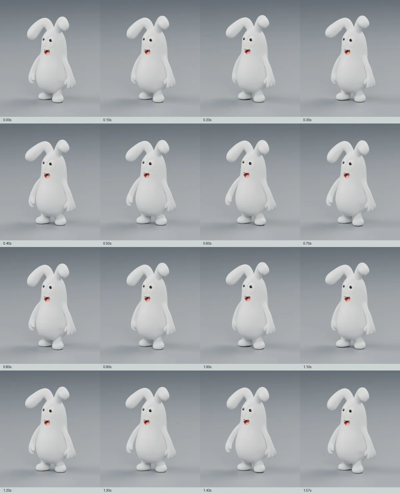
11/15 06:12 · 걷기 수정 후보 · Unity 미적용
발 위치에 맞춰 골반 높이 조절
원래 서 있는 메시와 노멀을 비교해, 고정된 낮은 골반 자세가 짧은 다리를 많이 접는 원인임을 확인했습니다. 다리 길이를 늘리지 않고 두 발 위치에 맞춰 골반 높이를 조절합니다. 손·팔, 원래 메시·UV·본 길이는 유지했습니다.
접지 때 발목 접힘은 줄었지만 발을 드는 구간의 안쪽 주름은 남습니다. 종아리의 프레임 간 각도 변화는 최대11.72도로 전 후보보다 커서 동작 연결을 더 다듬어야 합니다. 느린 제자리 보행 후보이며 실제 게임 속도와 연결하지 않았습니다. 48장 렌더·자세 시트·GLB/FBX 재수입 대조까지 확인했으며, 연속 재생 검토·사용자 승인·다른 체형 적용은 남았습니다.
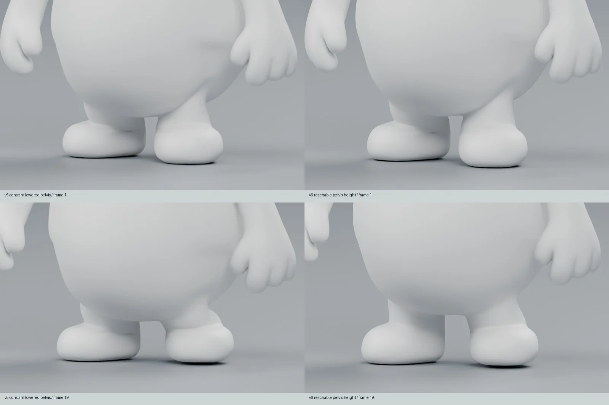
GIF · 16시점 자세 ·
11/15 · 발목 연결부 비교 · 미채택 후보
발목이 접히는 부분을 가까이 비교
골반과 허벅지 가중치를 유지하면서 종아리와 발 사이만 다시 연결했습니다. 손 모양·팔 길이와 발바닥은 보존했습니다. 아래 위쪽은 앞선 걸음 후보, 아래쪽은 이번 발목 후보입니다.
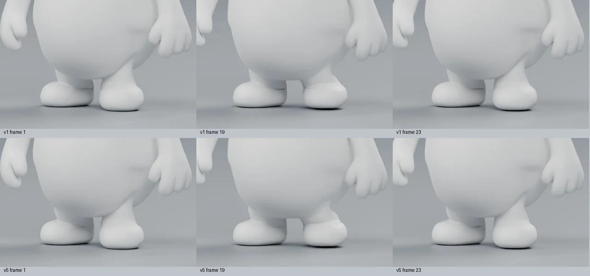
접지 자세의 바깥쪽 연결부는 더 이어져 보이지만 안쪽 접힘과 발을 들 때의 압축은 남았습니다. 일부 변형 수치도 나빠져 전체 개선으로 판단하지 않습니다. 이 후보를 다른 체형이나 Unity에 적용하지 않았습니다.
후보 GIF · 16시점 자세
1.6초·48프레임 렌더와 원형 보존·내보내기 대조, 자세 시트 검토까지. 연속 영상 재생 검토·게임 속도 맞춤·사용자 승인은 남아 있습니다. 골반을 더 낮춘 안과 넓은 가중치 변경안은 접힘이 커져 제외했습니다.
11/15 · 짧은 걸음 후보 · 게임 적용 전
발을 낮게 들고 작은 보폭으로
청록 체형의 1.6초 제자리 걸음 시험입니다. 양발이 함께 바닥에 닿는 구간을 두고 어깨·귀 반동을 작게 넣었습니다. 아랫배 가중치를 다듬었으며 손 모양과 팔 길이는 유지했습니다.
GIF 보기 · 16시점 자세 보기
48장 Blender 렌더, 전면·측면·16시점 시각 검토와 내보내기 대조를 마쳤습니다. 원형 크기에서 초당 약12cm의 느린 보폭 시험이며 게임 속도 맞춤·연속 동작 검토·발목과 체중 이동·다른 체형은 남아 있습니다. Unity 보행 완성본이 아닙니다. 깊이 숙이는 바닥 춤의 접힘도 별도로 수정 중입니다.
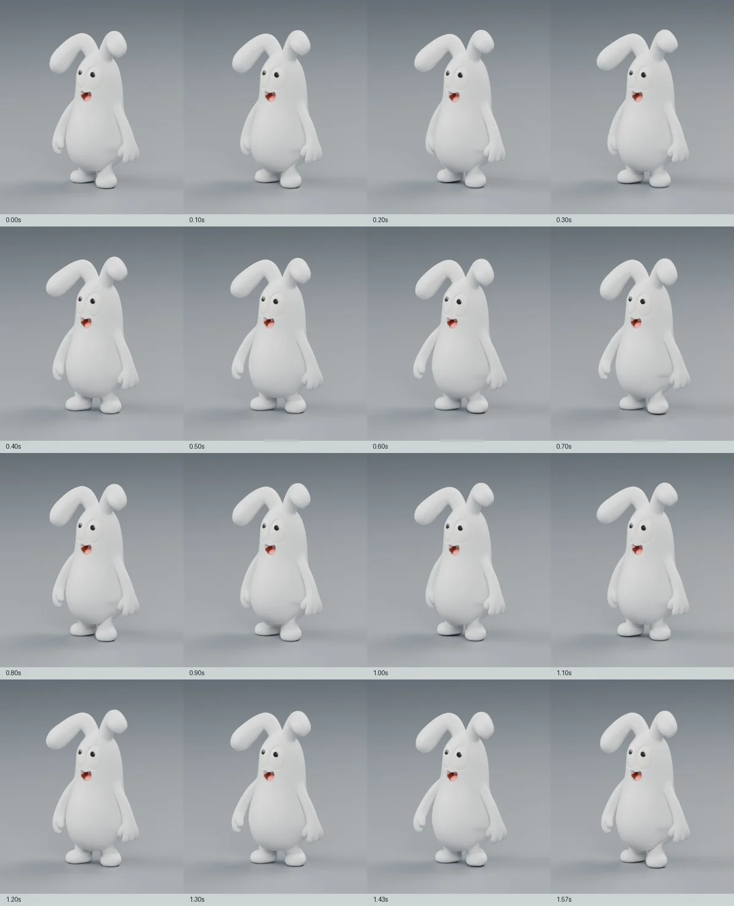
11/15 · 새 도발 후보 · 게임 적용 전
“이리 와” · 손바닥을 내밀어 세 번 부르기
4.8초 동작입니다. 손 모양과 팔 길이를 유지하고 팔꿈치와 작은 손목 회전으로 손짓합니다. 세 번째 도발의 첫 후보이며, 손가락별 동작·다른 체형·게임 적용과 사용자 검토는 남아 있습니다.
GIF 보기 · 16시점 자세 보기
원래 메시·UV·본 길이와 손 가중치 보존 확인. 72장 렌더와 내보낸 모델 대조, 아래16시점 시각 검토를 했습니다. 이 결과는 연속 영상 재생 검토나 Unity 검증을 의미하지 않습니다. 바닥 춤의 배·다리 접힘은 해결 전이며 새 자세 시험은 채택하지 않았습니다.
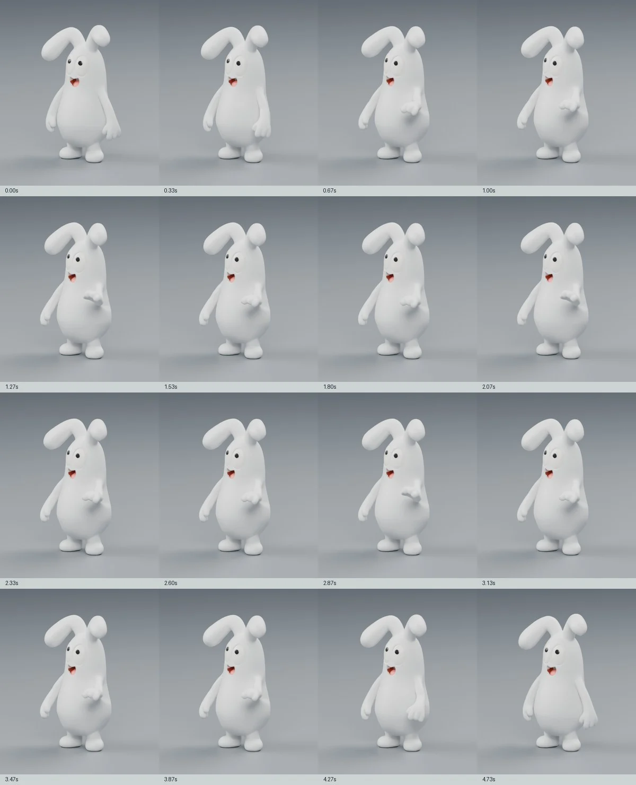

Blue · 기존 파랑 체형
몸·눈5메시 / 분리 치장1메시
열린 경계 0 · 원본 보존
· · 
Yellow · 짧고 통통한 체형
몸·눈5메시 / 분리 치장5메시
열린 경계 0 · 원본 보존
· · 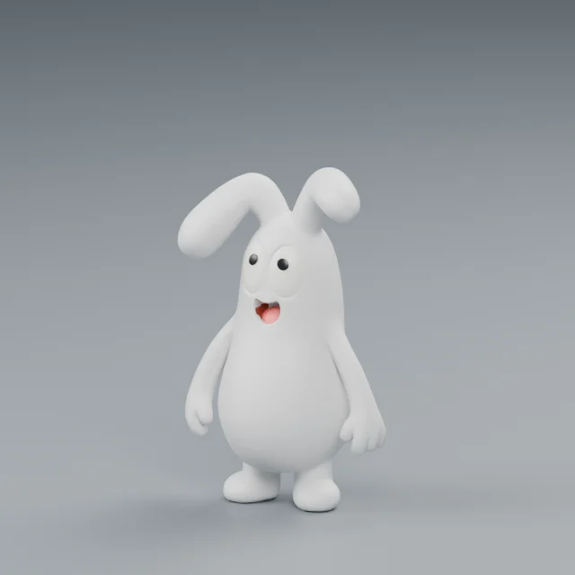
Teal · 길쭉한 체형
몸·눈5메시 / 분리 치장5메시
열린 경계 0 · 원본 보존
· · 
Coral · 둥근 체형
몸·눈5메시 / 분리 치장6메시
열린 경계 0 · 원본 보존
· · 11/15 04:15 제작 · Blender 후보
청록 · 뒤돌기 아랫배 주름 조정
뒤돌 때 낮춘 몸의 아랫배에만 국소 보정을 넣었습니다. 원형 메시와 본 길이, 손바닥 가중치는 그대로입니다. 넓은 가중치 변경은 바닥 자세의 다리 연결을 망가뜨려 채택하지 않았습니다.
12초 / 실제 Blender180프레임. 깊은 바닥 자세는 v8과 같으며 배·겨드랑이 접힘이 남아 있습니다.

동일한19번 프레임 비교. 손·팔을 늘리거나 눌러 맞추지 않았습니다. Unity·다른 체형 적용 전.
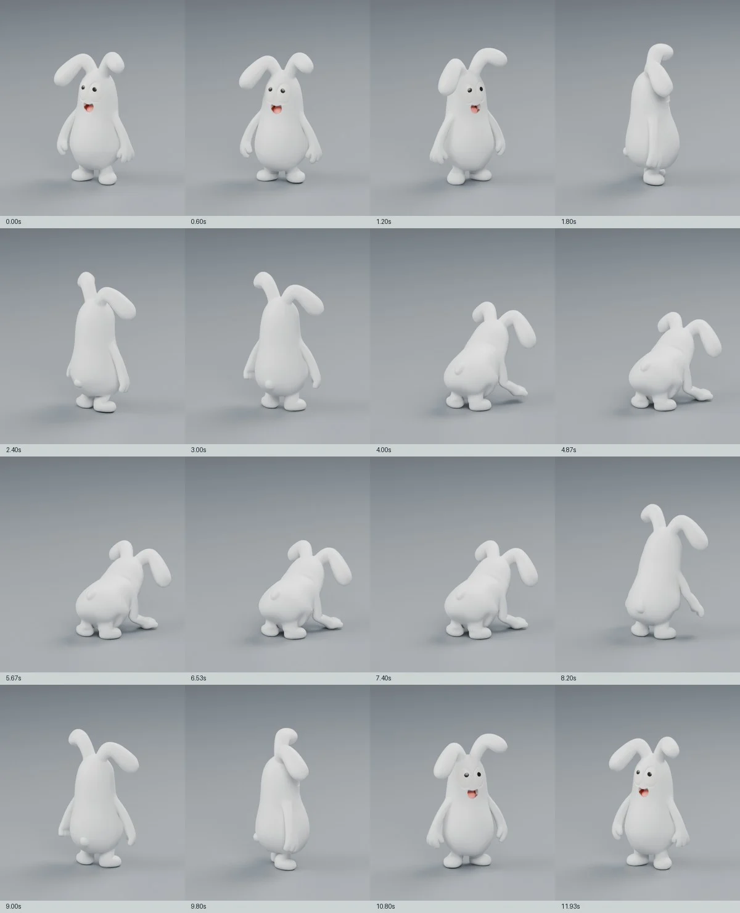
반복 GIF 보기11/15 03:56 제작 · Blender 검토 후보
청록 · 뒤돌 때 무릎이 급하게 꺾이는 구간 조정
짧은 발걸음으로 돌아서도록 발을 드는 높이와 몸 낮춤을 조절했습니다. 손·전완의 길이나 손바닥 형상을 바꾸지 않았습니다. 최대 관절 변화는13.42→7.06도/프레임으로 줄었지만, 배·겨드랑이 접힘은 계속 다듬어야 합니다.
실제 Blender180프레임 /12초. 게임 녹화가 아닙니다.

Unity 적용 전. 다른 체형과 착석으로 아직 확장하지 않았습니다.
11/15 최신 검토 후보 · Unity 적용 전
청록 · 가볍게 뒤돌기와 하체 접힘 조정
뒤돌 때 깊이 주저앉던 동작을 줄이고, 바닥을 짚을 때 배·다리 연결부가 접히는 부분에 국소 보정을 넣었습니다. 손바닥·발바닥·기본 메시와 본 길이는 유지했습니다.
반복 미리보기 · 16시점 검토 · 이전과 비교
바닥 자세의 배·겨드랑이 실루엣과 무릎 전환은 더 다듬어야 합니다. 손 모양을 바꾸지 않는 국소 몸통 보정 후보이며, 착석·다른 세 체형·Unity에는 아직 적용하지 않았습니다. 완성판이나 사용자 승인 상태가 아닙니다.
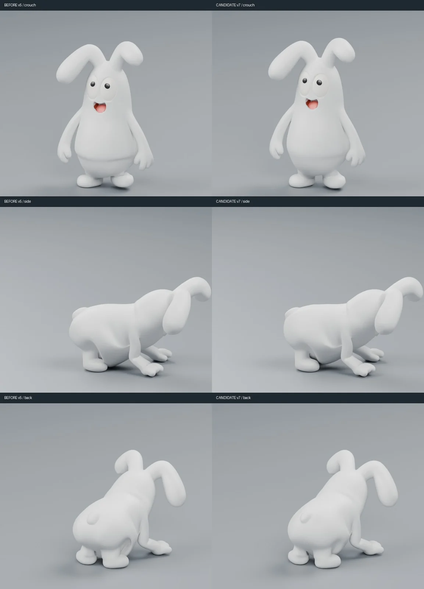
이전 바닥 v5와 현재 착석 v3 비교 기록
청록 · 목·어깨 연결과 바닥 지지 자세 수정
어깨 보조 본의 영향이 머리까지 번지던 부분을 정리했습니다. 손바닥 형태와 팔·다리 길이를 유지하면서, 바닥 춤의 손 짚는 각도·몸 높이·골반 움직임을 조정했습니다. 착석에도 같은 목·어깨 수정을 적용했습니다.
개선 후보이며 완성판은 아닙니다. 배·다리 연결부의 접힘과 실루엣은 더 다듬어야 합니다. 착석은 검토용 발받침 위에서 시작하며, 바닥 접근·의자 오르기와 게임 가구 맞춤도 남아 있습니다. 다른 체형과 Unity에는 아직 반영하지 않았습니다.
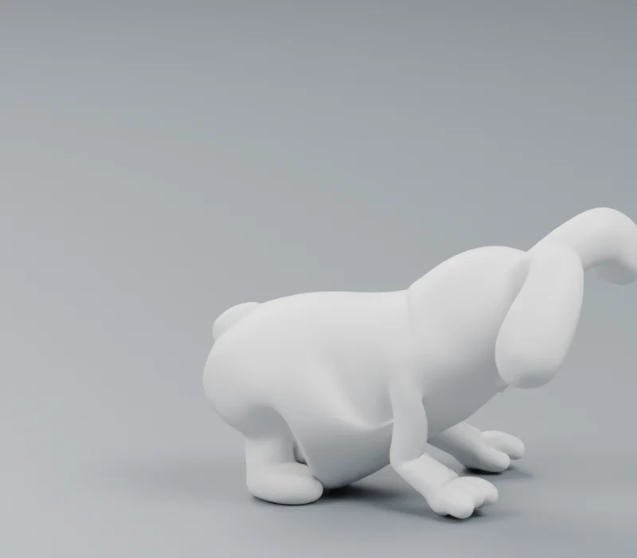
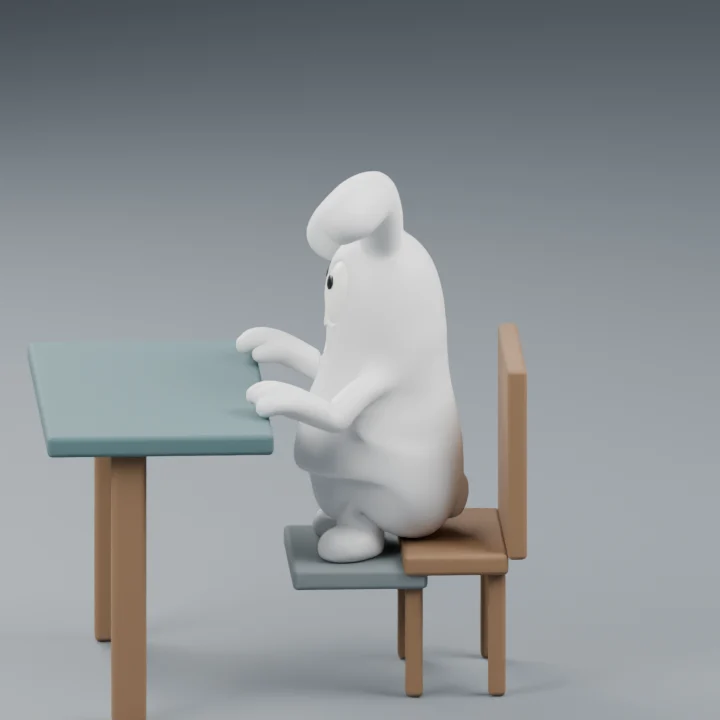
이전 착석 v2 비교 기록 · 최신 목·어깨 수정은 위 후보
청록 · 손 놓기와 착석 전환
손을 책상에 놓고 앉기 → 잠시 대기 → 일어나서 손을 빼는 8초 수정 후보입니다. 책상 가장자리로 손 위치를 당겨 팔꿈치를 자연스럽게 굽히고, 원래 손바닥 형태와 팔 길이를 유지했습니다. 손이 닿은 동안에는 손과 발을 고정했습니다.
검토용 가구의 발받침 위에서 시작합니다. 바닥에서 의자로 접근·오르기, 실제 게임 가구 맞춤, 몸통·목·어깨 경계 다듬기와 다른 체형 적용은 남아 있습니다. Unity에는 아직 적용하지 않았습니다.
반복 미리보기 · 16시점 자세 검토 ·
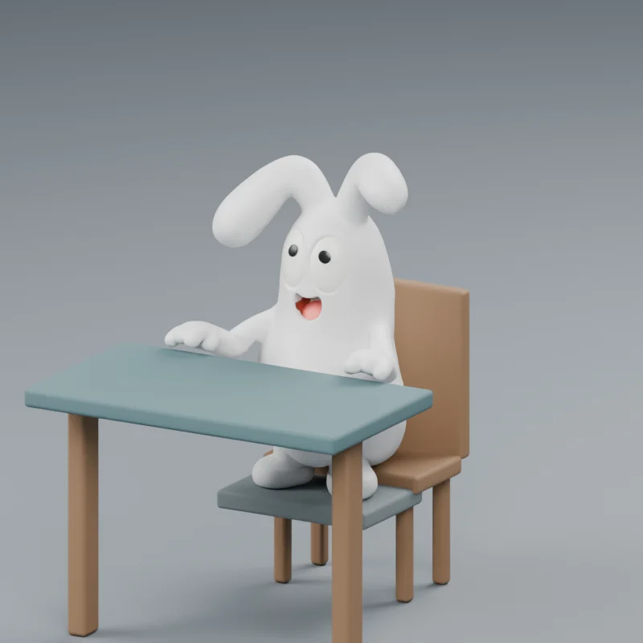

이전 v4 비교 기록 · 최신 바닥 춤 후보는 위 v5
청록 v4 · 발을 딛고 뒤돌기 + 바닥 지지 춤
여섯 번의 작은 스텝으로 뒤돌고, 두 손을 짚은 뒤 빠르게 골반을 흔들고 돌아오는 12초 수정 후보입니다. 딛고 있는 발을 바닥에 고정하고 몸을 낮추는 전환을 늘렸습니다. 골반 보조 본 2개로 허벅지 연결부의 굽힘을 나눴으며, 원형 메시·기존 본 길이·손바닥 가중치는 유지했습니다.
검토 후보입니다. 깊이 숙일 때의 배 실루엣과 목·어깨 경계는 추가 피팅 대상입니다. 착석 전환·다른 체형·다른 춤·Unity 적용은 아직 완료하지 않았습니다.
반복 미리보기 · 16시점 자세 검토 ·
이전 v3 비교 기록 · 최신 후보는 위 v4
청록 · 바닥 지지 춤 v3 수정 후보
손을 바닥까지 구겨 넣는 대신 몸을 숙이는 각도·손 위치·팔꿈치 방향을 다시 맞췄습니다. 지지 구간 손목은 최대51.5도로 줄였고, 손바닥 핵심 형태와 본 길이를 유지합니다. 뒤돌기 → 두 손 짚기 → 빠른 골반 흔들기 → 일어나기8초 후보입니다.
아직 완성판이 아닙니다. 돌아설 때 발이 미끄러지는 부분과 골반·허벅지 연결 주름이 남아 다음으로 수정합니다. 게임에는 적용하지 않았고 다른 체형/착석도 아직입니다.
반복 미리보기 · 16시점 자세 검토 ·
이전 손·팔 FK 비교 후보
청록 바닥 춤은 기존 자세가 약84도 손목 회전을 요구했습니다. 손목만50도로 제한한 후보도 몸을80도 숙이고 손바닥 정렬이 어긋나 채택하지 않았습니다. 해당 후보는 미채택으로 보존했고 위v3에서 몸 자세·팔꿈치 방향·손 접지 위치를 함께 다시 맞췄습니다.
아래는 손목을 중립으로 둔 작은 FK 동작 비교 후보입니다. 요청한 웃긴 춤3종이나 전체 모션의 완성판이 아닙니다. 손바닥 핵심 형태·본 길이·루프는 검사했지만 전체 피부 변형과 게임 체감은 남았습니다.

· · MP4 ·
이어서 할 일
캐릭터: 바닥 지지 춤·별도 도발·착석 전환과 걷기/뛰기/점프/들기 → 체형별 렌더 검수 → 호환 리그/독립 스킨으로 Unity 연결.
방: 제작 담당의 최신 시안을 확인해 외곽·크기·높이·소품 위치를 맞추고, 가구/장치 용도에 맞는 충돌을 연결합니다.
사용자가 중단을 요청할 때까지 작업합니다. 현재 열린 Unity의 Play 검증은 허용됐으며, 새 캐릭터의 게임 적용과 최종 동작 검토는 별도입니다. 이번 후보는 Blender 작업으로 만들었습니다.